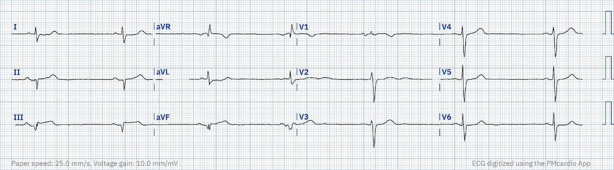
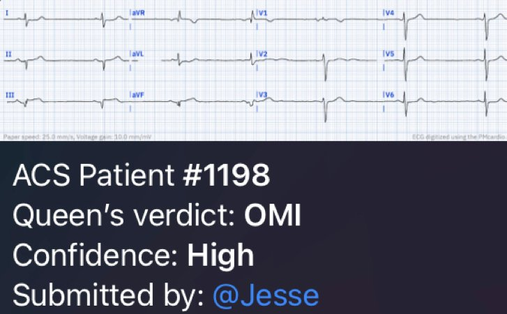
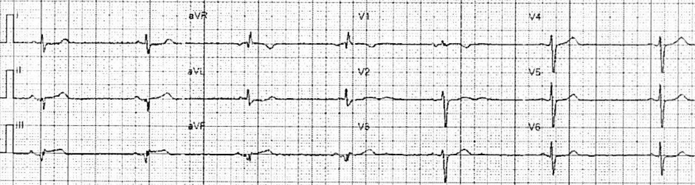
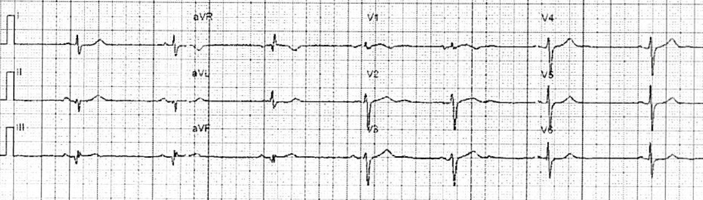
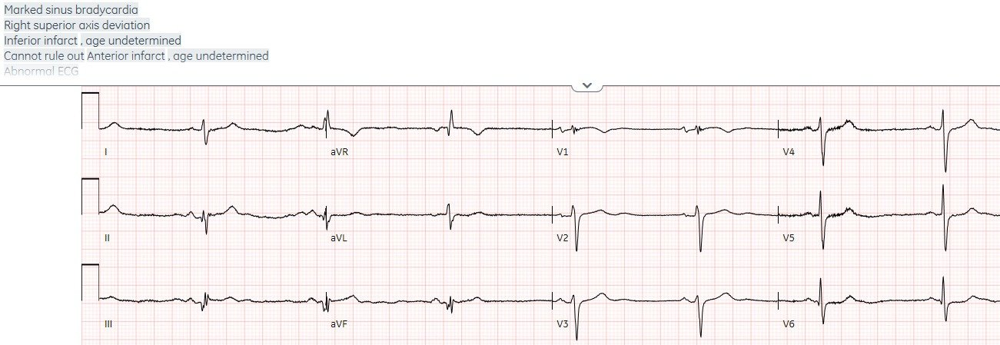
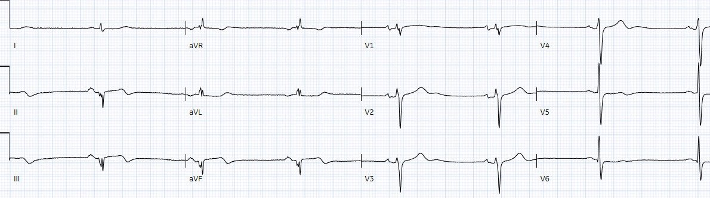
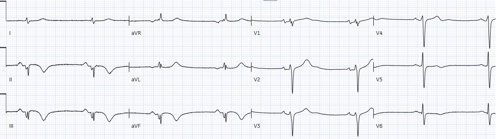

08/06/2023 — Bệnh nhân 75 tuổi đau ngực 24 giờ, STEMI âm tính
Bản dịch tiếng Việt của bài "75 year old with 24 hours of chest pain, STEMI negative" – Dr. Smith’s ECG Blog. Giữ nguyên toàn bộ 7 hình ảnh của bản gốc.
Tác giả: Jesse McLaren
Một bệnh nhân 75 tuổi
có tiền sử phẫu thuật bắc cầu chủ vành (CABG) gọi đội cấp cứu ngoài viện (EMS) sau 24 giờ đau ngực. Tần số tim 40, huyết áp
135/70, nhịp thở (RR) 16, SpO2 100%. Đây là điện tâm đồ do nhân viên cấp cứu ngoài viện ghi (đã số hóa bằng PMcardio). Bạn
nghĩ gì?


Có nhịp chậm
xoang, dẫn truyền bình thường, trục bình thường, tăng tiến sóng R chậm, và
điện thế bình thường. Có sóng Q ở thành dưới và chuyển đạo III có ST chênh lên nhẹ dạng lõm
(concave), kèm ST chênh xuống soi gương kín đáo ở I/aVL. Hình ảnh này đủ để chẩn đoán
OMI thành dưới, nhiều khả năng do RCA. Bệnh nhân có tiền sử CABG nên một số
thay đổi này có thể là cũ, nhưng với đau ngực đang tiếp diễn và nhịp chậm ở một
bệnh nhân nguy cơ cao thì đây vẫn là OMI cấp cho đến khi chứng minh được điều ngược lại.
Tôi đã gửi điện tâm đồ này
cho Dr. Meyers mà không kèm bất kỳ thông tin nào, và ông lập tức trả lời: “OMI
thành dưới.” Tôi cũng gửi nó cho ứng dụng PMcardio Queen of Hearts. Được huấn luyện bởi Smith
và Meyers, ứng dụng cũng lập tức đưa ra cùng câu trả lời OMI với độ tin cậy cao:


Nhưng có
nhiều rào cản trong việc đưa bệnh nhân tới phòng thông tim (cath lab):
a. STEMI âm tính: kết quả đọc tự động
của EMS ghi: “STEMI âm tính. Nhồi máu thành dưới, không xác định được thời gian. Nhịp chậm
xoang.” Theo mô hình STEMI, bệnh nhân không bị
tắc mạch vành cấp và không cần tái tưới máu cấp cứu, nên
nhân viên cấp cứu ngoài viện có thể đưa bệnh nhân tới khoa cấp cứu (ED) để đánh giá mà không cần
bác sĩ tim mạch tham gia. Nhưng đồng thuận mới nhất của ACC về đánh giá đau ngực tại
khoa cấp cứu cảnh báo rằng “tiêu chuẩn STEMI sẽ bỏ sót một nhóm thiểu số đáng kể bệnh nhân
bị tắc mạch vành cấp.”[1]
b. đến viện muộn: ngay cả khi có
tiêu chuẩn STEMI, bệnh nhân đến viện sau 24 giờ đau ngực, và đã có sóng Q
– cả hai điều này thường bị (sai lầm) coi là nằm ngoài cửa sổ
điều trị. Trong một nghiên cứu đánh giá lý do vì sao bệnh nhân STEMI không được
tái tưới máu, việc bệnh nhân trì hoãn hơn 12 giờ kể từ lúc khởi phát triệu chứng là
lý do thường gặp nhất.[2] Điều này bất chấp bằng chứng về cứu vớt cơ tim ở những bệnh nhân
đến muộn (12-72h) bị tắc hoàn toàn.[3]
c. ST chênh lên thoáng qua nhưng tắc
vẫn tiếp diễn. Ngay cả khi bệnh nhân đến sớm với tiêu chuẩn STEMI,
ST chênh lên đã hết khi tới viện dù cơn đau vẫn tiếp tục. Đây là
điện tâm đồ đầu tiên và điện tâm đồ ghi lại của nhân viên cấp cứu ngoài viện:




Theo một số
cách diễn giải y văn về “STEMI thoáng qua”, bệnh nhân này không
cần tới phòng thông tim vì đoạn ST đã cải thiện. Ví dụ, thử nghiệm TRANSIENT phân ngẫu nhiên bệnh nhân STEMI thoáng qua vào chiến lược xâm lấn ngay lập tức so với trì hoãn và kết luận rằng “kích thước ổ nhồi máu trong STEMI thoáng qua là nhỏ và không bị ảnh hưởng bởi chiến lược
xâm lấn ngay lập tức hay trì hoãn. Ngoài ra, MACE ngắn hạn
thấp và không khác biệt giữa các nhóm điều trị.”[4] Nhưng tiêu chuẩn chọn bệnh là bệnh nhân “phải hết hoàn toàn triệu chứng và đoạn ST trở về bình thường hoàn toàn.” Và ngay cả khi đó vẫn có nguy cơ tắc lại khi trì hoãn thông tim.
Như một bài phân tích về thử nghiệm TRANSIENT đã giải thích, “có những tín hiệu đáng lo ngại trong
thử nghiệm thiếu năng lực thống kê này. Có xu hướng kích thước ổ nhồi máu lớn hơn khi
trì hoãn chụp mạch, theo cả cMR lẫn nồng độ tích phân troponin độ nhạy cao,
cũng như xu hướng tỷ lệ biến cố tim mạch bất lợi
chính (MACE) cao hơn (8,5 so với 2,9%; P = 0,28) ở
nhóm trì hoãn. Con số sau này bao gồm bốn bệnh nhân được phân ngẫu nhiên
vào nhóm chụp mạch trì hoãn đã phải tái thông mạch khẩn vì
thiếu máu cục bộ tái phát, và phản ánh một xu hướng quan sát được trong phân tích post hoc ELISA-3
trên bệnh nhân STEMI thoáng qua. Vì thiếu máu cục bộ tái phát là
biến cố chính được giảm nhờ can thiệp sớm trong NSTE-ACS, đây là
những biến cố tiêu chí quan trọng xảy ra khi trì hoãn chụp mạch và hiện
đã có tín hiệu gây hại nhất quán từ hai nguồn dữ liệu.”[5]
Bệnh nhân này vẫn đau ngực, nhịp chậm, và không có dấu hiệu sóng T đảo ngược
do tái tưới máu. Điện tâm đồ ghi lại tại khoa cấp cứu cho thấy thoáng có ST chênh lên ở thành dưới:


Mô hình STEMI và mô hình OMI
Theo
mô hình STEMI, diễn tiến nhiều khả năng nhất của ca này sẽ là:
1.
nhân viên cấp cứu ngoài viện
vận chuyển tới khoa cấp cứu với chẩn đoán “đau ngực, STEMI âm tính”
2.
khoa cấp cứu
mời hội chẩn vì “non-STEMI” khi troponin trả về tăng
3.
Khoa tim mạch
nhập viện với chẩn đoán “non-STEMI” để chụp mạch vành không khẩn cấp
4.
Chẩn đoán
ra viện là “Non-STEMI”, bất kể kết quả chụp mạch, troponin đỉnh hay
siêu âm tim
Nhưng thay vào đó,
bệnh nhân này đã được chăm sóc xuất sắc nhờ gạt bỏ mô hình STEMI và
tập trung vào tái tưới máu cho tắc mạch vành cấp:
1.
Dù
không có tiêu chuẩn STEMI, nhân viên cấp cứu ngoài viện vẫn đề nghị hội chẩn tim mạch khẩn (STAT) vì
lo ngại tắc mạch vành cấp—do xác suất tiền nghiệm cao
và các dấu hiệu tắc kín đáo trên điện tâm đồ. Như họ đã ghi lại: “Nhân viên cấp cứu ghi nhận
điện tâm đồ 12 chuyển đạo của bệnh nhân dường như có ST chênh lên 1mm ở III và chênh lên giới hạn 1mm
ở aVF, kèm chênh xuống nhẹ ở I và aVL. Do những
dấu hiệu giới hạn này và tiền sử bệnh tim của bệnh nhân, bác sĩ tim mạch can thiệp đã được gọi
để hội chẩn.”
2.
Khoa tim mạch
ghi nhận “STEMI đến muộn nhưng có lẽ đã tự hủy (aborted) vì thay đổi ST
đã hết từ lúc EMS tới khi vào viện.” Nhưng họ vẫn đưa bệnh nhân
ngay lập tức tới phòng thông tim, với thời gian từ cửa đến phòng thông tim là 45 phút.
Bệnh nhân bị tắc 100% cầu nối RCA. Troponin I
ban đầu là 4.000 ng/L (bình thường <26 ở nam và <16 ở nữ) và
tăng lên 14.000 (khẳng định đây không phải là một ‘STEMI bị bỏ sót’ với troponin đạt đỉnh lúc
nhập viện, dù đã đau 24 giờ). Các điện tâm đồ theo dõi cho thấy sóng T đảo ngược
do tái tưới máu ở thành dưới:




Vấn đề duy nhất
là chẩn đoán ra viện lại là “STEMI” dù chưa có điện tâm đồ nào đạt tiêu chuẩn
STEMI. Vì vậy ca OMI STEMI âm tính (STEMI(-)OMI) được điều trị nhanh này sẽ được đưa vào cơ sở dữ liệu
STEMI, cho thấy lợi ích của tái tưới máu nhanh đối với “STEMI”, thay vì được
nhận ra là một trong rất nhiều ca “non-STEMI” có tắc mạch, vốn có nguy cơ bị trì hoãn
tái tưới máu nhưng sẽ có kết cục tốt hơn nếu được tái tưới máu nhanh.
Điều cần nhớ
1.
Tiêu chuẩn
STEMI, và các kết quả đọc tự động dựa trên nó, sẽ bỏ sót tắc mạch vành
cấp. Nhưng nhân viên y tế cấp cứu, kể cả nhân viên cấp cứu ngoài viện, có thể học các dấu hiệu của OMI,
và việc này có thể được đẩy nhanh nhờ AI do chuyên gia huấn luyện
2.
Triệu chứng
kéo dài không có nghĩa là nhồi máu đã hoàn tất, và không phải là lý do để trì hoãn
tái tưới máu
3.
ST chênh lên
thoáng qua mà triệu chứng vẫn tiếp diễn thì vẫn cần tới phòng thông tim
4.
Sự
chuyển đổi sang mô hình OMI có thể bắt đầu từ cơ sở, nhưng các cơ sở dữ liệu cần phân loại
bệnh nhân chính xác thành OMI/NOMI thay vì STEMI/Non-STEMI – vừa để nhận diện những
chậm trễ tái tưới máu có thể phòng tránh, vừa để làm nổi bật những thành công như ca này
Tài liệu tham khảo
1.
Kontos
và cs. 2022 ACC Expert Consensus Decision Pathway on the Evaluation
and Disposition of Acute Chest Pain in the Emergency Department: A Report of
the American College of Cardiology Solution Set Oversight Committee. J Am Coll
Cardiol 2022 Nov 15;80(20):1925-1960
2.
Welsh
và cs. Evaluating clinical reasons and rationale for not delivering reperfusion
therapy in ST elevation myocardial infarction patients: insights from a
comprehensive cohort. Tạp chí Int J Cardiol, 2016
3.
Busk
và cs. Infarct size and myocardial salvage after primary angioplasty in
patients presenting with symptoms for <12h vs 12-72h. Tạp chí Eur Heart J, 2009
4 Lemkes và cs. Timing of revascularization in patients with transient ST-segment elevation myocardial infarction: a randomized clinical trial. Tạp chí Eur Heart J, 2019
5.
Bergmark BA, Faxxon DP. Transient
ST-segment myocardial infarction: a new category of high risk acute coronary
syndrome? Tạp chí Eur Heart J 2019;40:292-294